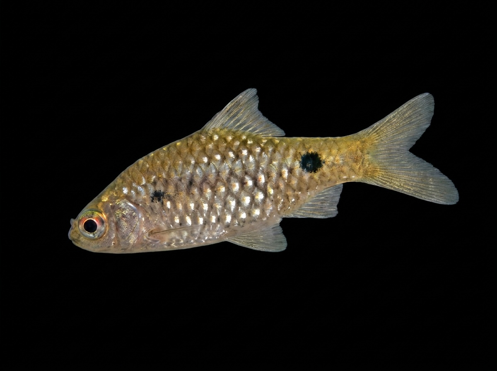

Long-snouted Barb
Pethia dorsalis (Puntius dorsalis)
The Long-snouted Barb is a freshwater fish native to Sri Lanka, found mainly in rivers, streams, and larger waterways across the island. It is recognized by its elongated snout and slender body shape, which helps it search for food among rocks, gravel, and aquatic vegetation. This active species prefers clear, well-oxygenated waters and is often found in flowing streams and river habitats. It feeds on algae, plant matter, small insects, and other tiny aquatic organisms. Unlike some smaller ornamental barbs, the Long-snouted Barb can grow to a larger size and plays an important role in Sri Lanka’s freshwater ecosystems as a native river fish.